대화 (2)
<
안초롱: 아쉬웠던 점도 이야기할게요. 처음에 제가 전시회 어디서 하시냐고 물어봤을 때, 장소가 오피스텔이라고 해서 답변을 듣고 상상한 바가 있거든요? 근데 전시장에 들어가니까 헷갈리더라고요. 좀 부자연스럽다고 해야 되나? 이게 굉장히 애매한 지점인데 전시장처럼 보였어요. 내가 집 구석구석을 다 열어보지 않았다고 가정해도, 정리가 많이 되어 있더라고요.
예컨대 침대 안의 T5 조명이나, 샤워 부스 문에 꼭 맞춰서 프린트한 <수염 드로잉(외딴 여자)> 사진. 그리고 책장 옆면을 봤을 때 『The Park』라는 책의 표지 사진이 언뜻 보인다든가 하는 선택이 뭐랄까, 자연스럽게 보여주는 게 아니라 연출처럼 보였달까? 전시 공간으로서의 오피스텔을 생활 공간으로 보여줄지 무대로 보여줄지를 작가가 조금 헷갈렸나 싶었어요.
제가 제일 좋아했던 작업이 그 꽃 작업이었거든요. 수염으로 만든 꽃. 그게 제일 자연스러워서 좋았어요. 보면서 ‘이게 제동 초등학교 2학년 재훈 씨의 본질이 아닐까? 정말로 찾고 싶은 자기 자신 되기가 이런 건가?’ 생각하기도 했고요. 저의 마음에 있는 어떤 걸 좀 울리게 만들었어요.
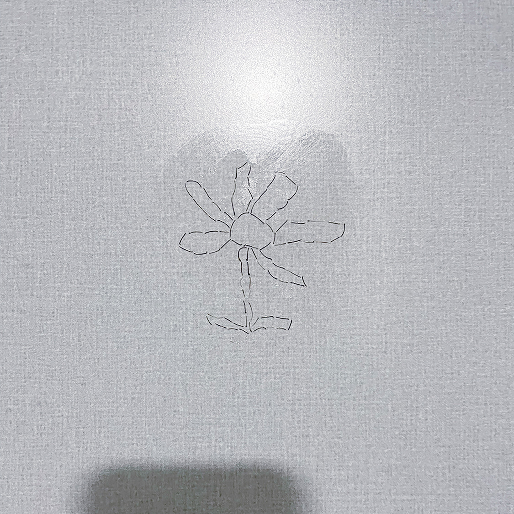
재훈: 그거 발견한 사람도 많이 없는데, 용케 보셨네요.
안초롱: 근데 그거는 뭐, 취향이니까.
재훈: 그렇죠. (웃음)
안초롱: 수염 드로잉의 원래 사이즈가 어느 정도인지 물어본 이유도 그런 거였어요.
재훈: 초롱 씨 취향이요.
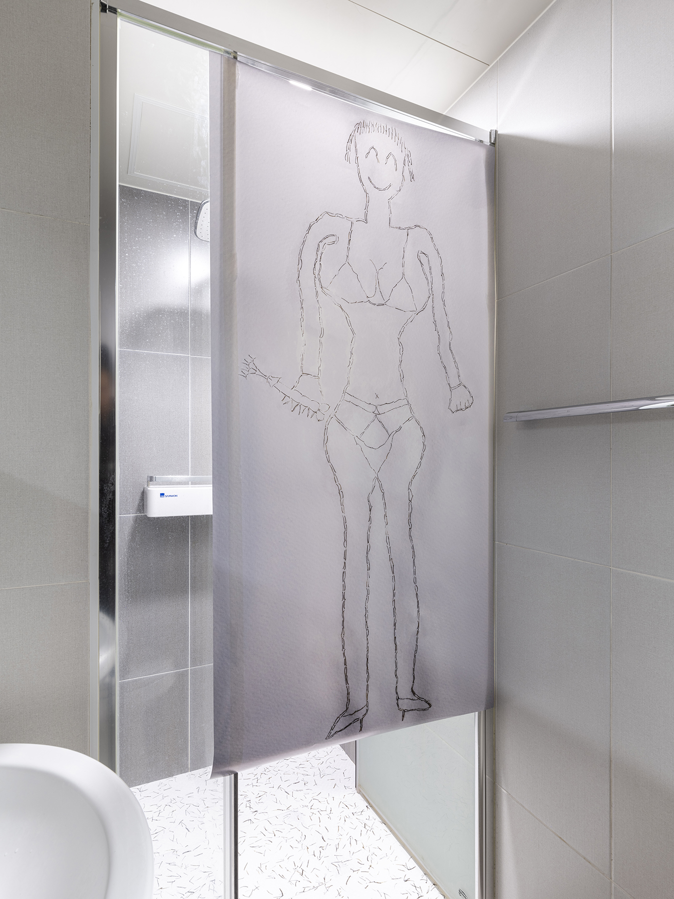
안초롱: 네. 근데 ‘외딴 여자’가 왼손에 들고 있는 고추는 왜 그렇게 얇고 길었어요? 요술봉처럼 생기기도 했는데, 채찍처럼 보이기도 하더라고요. 저는 <수염 드로잉> 속 그 여자가 누군가에게 맞아서 웃고 있다고 생각했어요. 다른 사람을 때리려고 기다리는 모습처럼도 보였지만요. 욕실 안에 있는 S 성향의 ‘외딴 여자’가 욕실 밖에 있는 (<대기 시간>과 <무제> 속) 마조히스트들을 때리는 거지. 전시를 보며 혼자 그런 상상을 했었어요. (웃음)
순수한 재훈: …… 재, 재미있는 상상이네요.
안초롱: 이런 얘기 어제1도 했죠? 안 했어요?
재훈: 마조히즘에 관한 이야기가 전반적으로 나오긴 했는데요. 말씀하신 것처럼 <수염 드로잉> 속 ‘외딴 여자’가 <대기 시간> 속에 있는 인간을 박았다 막 그런 이야기는…… 처음 듣긴 해요. 근데 그렇게 해석해도 할 말이 없긴 하죠. 어쨌든 제가 작품을 통해 구현하려 하는 섹슈얼리티는 자족적인 구조를 지향하고 있으니까.
안초롱: <대기 시간>이 에고고 ‘외딴 여자’가 얼터 에고인 거야. 그래서 얘가 얘를 데리고 가서 흐흐흐... 미안합니다. 어쨌든 <수염 드로잉>도 자기 신체 일부로 만든 거잖아요.
재훈: 그렇죠.
안초롱: 하여튼 혼자서 그런 상상을 했다. (웃음) 뭐 눈에는 뭐만 보인다고, 얘기하다 보니까 제 뒷면도 다 까이네요.
재훈: 아니에요. 그럴 수 있죠. 소극적으로 말하고 있지만 저도 그런 상상 많이 해요.
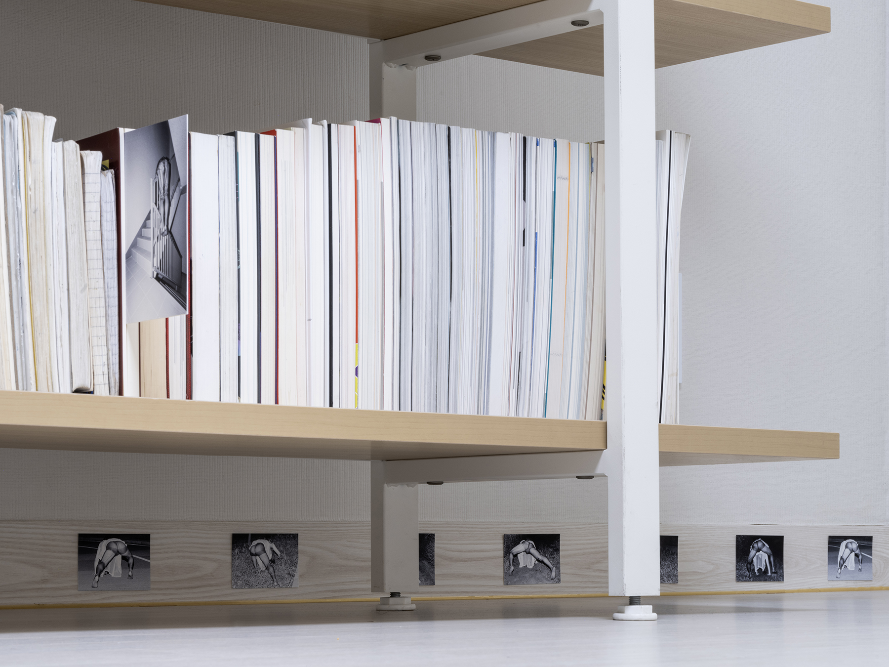 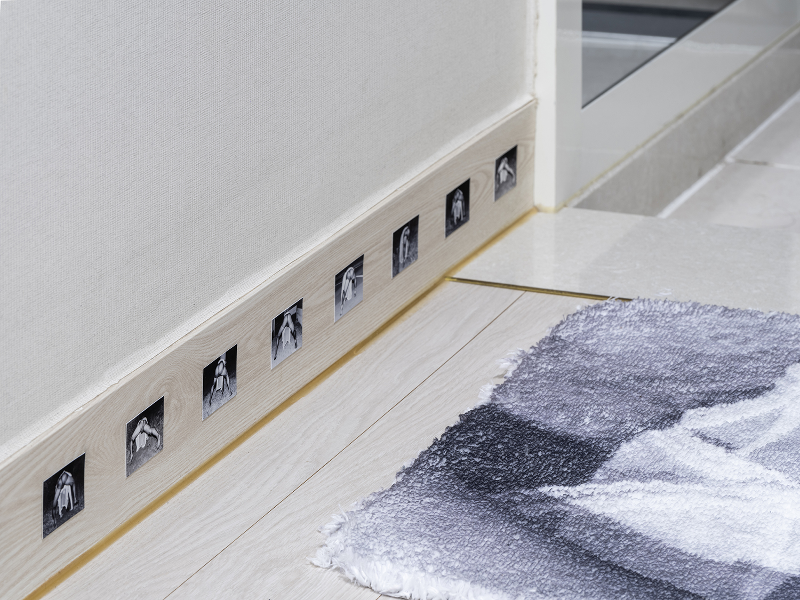 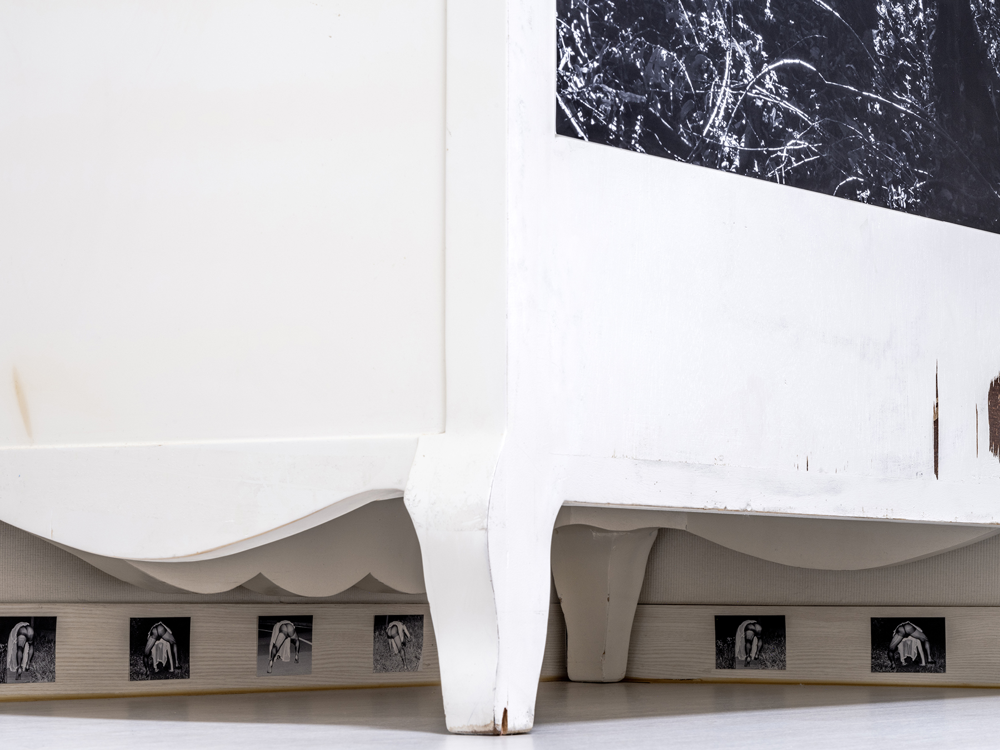
안초롱: 그런 건 의도한 것 같았어요. <끝없이 걷는 날>을 바닥 몰딩에 배치해 놓은 설치 방식. 관객에게 ‘너네도 엎드려서 봐라’라는 메시지처럼 읽혔는데, 그런 건 의도대로 잘 전달이 된 것 같아.
또 궁금했던 부분, ‘오래된 방은 궁전’이 전시 제목이고 동명의 사진 작업이기도 하잖아요. 근데 이 사진이 - <수염 드로잉>을 제외하면 - 유일한 정면 이미지란 말이지. 그래서 왜 정면 이미지를 메인으로 했을까? 물어보고 싶었습니다.
재훈: <끝없이 걷는 날>이나 <여름의 뒷면>에 쓰인 사진에는 인물의 의상보다 포즈가 중요해요. 전자에서는 네 발로 걷는 행위와 그 방향, 후자에서는 폭력을 당했거나 예견한 모습. 스타킹이나 란제리, 가발 등은 그런 능동/수동적인 모습이 출현할 수 있도록 만들어준 조건으로 역할 해왔고요.
<오래된 방은 궁전>에서는 반대로 아무 포즈도 안 하고 가만히 있는 인물이 보이는데요. 상대적으로 덜 자극적이고 덜 익명적인 이 사진을 처음 확인했을 때 이 사진 속 인물의 섹슈얼리티가 프로젝트의 초기 목표 중 하나였던 ‘나에게 필요한 정체성 찾기’와 상응한다고 느꼈어요. 그 모습이 이 전시에 있으며 관객을 맞이하면 좋겠었습니다.
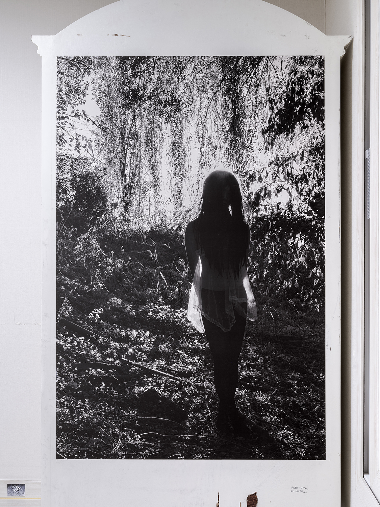
안초롱: 제목 잘 지은 것 같아요. ‘궁전’이란 단어는 - 성적 판타지처럼 - 판타지적인 뉘앙스로 다가오고, ‘방’은 사적인 공간, ‘오래된’은 “취미가 오래됐나?”라는 식으로 느껴졌거든요. 각자의 경험치에 따라서 상상할 수 있는 여지가 있어서 괜찮았어요.
재훈: 다행이네요.
안초롱: 그리고 전시의 리플렛에 있던 작품 설명 글 직접 쓰신 거죠? 수사가 많이 붙은 편이더라고요. <수염 드로잉>과 <오래된 방은 궁전>, <대기 시간>은 아까 재훈 씨가 초등학교 친구한테 팩트 폭력으로 상처 준 것처럼 객관적으로 쓰셨는데 나머지는 좀 더 자신의 감상이 많이 들어가 있었어요. ‘엉덩이가 얼굴이듯 걷고 있는 그것은’(<끝없이 걷는 날>)이나 ‘누군가가 시체처럼 축 늘어져 있다.’(<무제>) 이런 부분들이 사실은 작가가 자신의 감상을 써놓은 부분이잖아요. 근데 그 정도가 약간 과하다. 없어도 되는데 굳이 넣어서 해석을 닫히게 만들 수 있겠다는 생각, 관객에 따라 다르게 해석할 수 있으니까요. 그런 게 조금 아쉬웠다.
오히려 ‘수염을 선재 삼아 그린 한 장의 그림과 바닥이다.’(<수염 드로잉>) 라고 하면 “그렇구나, 왜 수염을 썼지? 왜 바닥에 붙였지?” 이런 추측을 할 텐데 앞서 말한 글들은 생각을 닫히게 만든 듯해요. ‘하얀색 실루엣 너머로 숨은 눈동자가 어디를 바라보는지 쉽게 알아볼 수 없다.’(<거꾸로 뜨는 눈>)
나를 보고 있던데? (웃음)
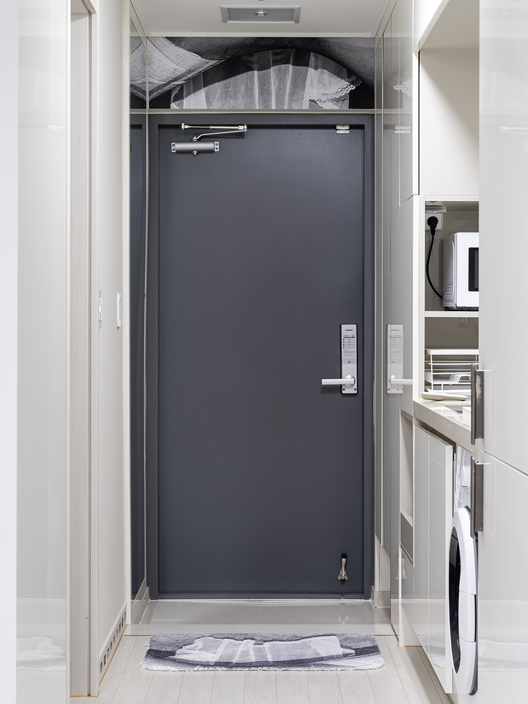 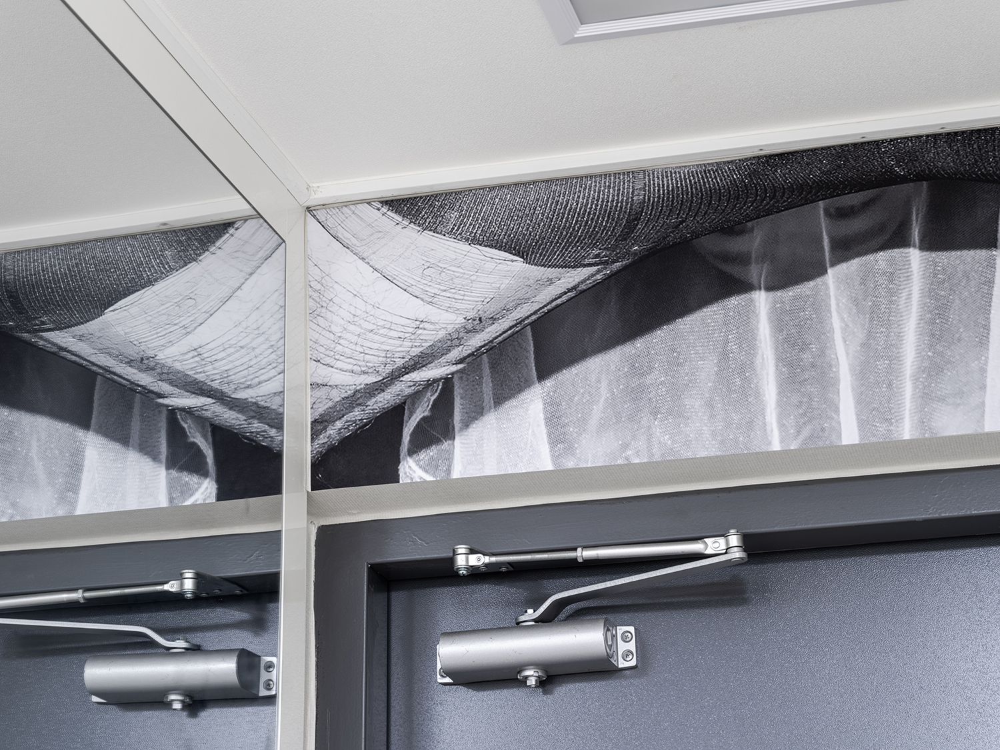
평소에 메모 모아놓는 일은 정말 잘하시는 것 같아요. 가끔 들여다보세요?
재훈: 하나도 안 봐요.
안초롱: 가끔 보세요. 저는 이런 거 너무 귀여운 것 같아요.
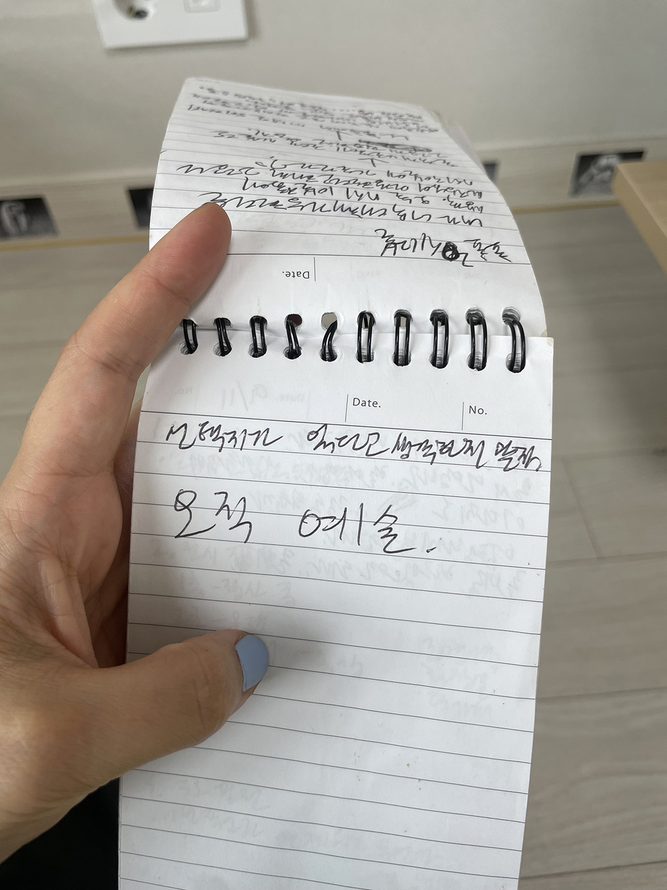
재훈: 감성이 메마를 때 봐야겠네요..
안초롱: 초심 찾아야할 때 보면 되죠. 뭐랄까, 저는 《모텔전》 리뷰에서 작가의 성공에 관해 인용하신 부분, 동의 못 했거든요. 젊은 작가가 아티스트 런 스페이스에서 데뷔한 뒤 대안 공간, 갤러리를 거쳐 미술관에서 전시하며 커리어를 쌓고 그 후로는 - 마치 결승선처럼 - 비엔날레에 참여하는 이 순서요.
재훈: 왜 동의 안 하셨어요?
안초롱: 저 완전 비동의죠. 그렇게 하려면 예술 왜 해요? 예술 할 이유가 없지, 그러면 그냥 회사 다녀야지. 저는 그런 테크트리[2] 따라서 하는 예술은 그냥 예술이 아니라고 생각해요. 재훈 씨, 메모에서 ‘오직 예술’이래매, 그럼 그런 생각 하면 안 되지. 만약에 선생이 그렇게 얘기했다면 그 선생은 잘못 가르치고 있다고 생각해요.
성공이라는 관념 자체가 각자에게 모두 다르지만 예술가로서 성공하기 위해서는 자기가 누구인지 끊임없이 살펴보고, 궁극적으로 어떤 이야기를 하고 싶은지 들여다봐야 한다고 생각해요. 결국에는 나중에 회고전을 했을 때 보는 사람들에게 정말 감동을 주는 좋은 작업을 해야 하지 않나? 살면서 진짜 그런 작업해 보고 싶지 않아요? 그런 게 진짜 성공 아니냐는 생각을 했죠. 성공에 관한 그 선생의 말은 정말 잘못된 생각이라고 얘기해 주고 싶었어요. 그 선생의 목을 베러 가자.
그래서 또 궁금한 게... (웃음)
재훈: 방금 말씀하신 이야기에 좀 머물다 가죠.
안초롱: 네.
저는 작가가 진짜 좋은 직업이라고 생각해요. 좋은 신분, 좋은 직업. 왜냐하면 우리는 평생 자기 자신을 모르다가 죽잖아요, 근데 예술가란 직업은 내가 누구인지에 대한 철학적인 탐구를 시각 예술을 통해 계속하는 것이죠. 그게 되게 행운 아닌가? 다른 사람들은 바빠서 그럴 생각할 시간이 없잖아요.
재훈: 그렇죠. 요즘 사람들 정말 너무 바쁘죠. 혹시 초롱 씨는 최근에 작업을 보고 감동받았던 적이 있었나요?
안초롱: 얼마 전에 몬트리올에 있는 레지던시에 잠깐 갔다 왔어요. 거기서 사진하는 친구들 중 하나가 자기 스승이 지금 회고전 하는데 재밌으니까 한번 보라고 하는 거예요. 일단 그 선생님은 퀴어이자 게이 작가고 평생 자기 정체성과 섹슈얼리티를 가지고 고민한 사람이었어요. 근데 작품마다 형식이 다 달라요. 사진 외길 인생을 걸으면서 이거저거 다 해본 거죠.
(당연한 말이지만) 좋은 작품도 있었지만 안 좋은 작품들도 있었어요. 사람이 계속 좋은 것만 할 수는 없으니까. 그런데 그것들이 한자리에 모여있다는 점이 좋았어요. 평생 같은 이야기를 하는데, 이렇게도 해보고 저렇게도 해본 뒤 그걸 잘 정리해서 보여주는 게 아주 멋있었어요.
어느 시기의 작업이 후지다고 해서 그 사람의 모든 작업이 후진 게 아니잖아요. 겉보기엔 후질지 몰라도 그 작업을 만드는 시간이 본인에게 있어서 반드시 필요했을 지도 모르고, 그런 게 있어야 다음 작업도 할 수 있으니까요.
재훈: 네, 시간이 흐르는 게 필요하겠네요.
안초롱: 그렇죠, 자연스럽게 그럴 거예요. (재훈 씨도) 미술 애호가시니까 계속하겠죠.
그리고 저 이것도 물어보고 싶었어요. 어쨌든 이 작업들은 퍼포먼스적인 성향이 굉장히 강하다고 느껴지는데 왜 사진의 형식으로 보여주는지? <끝없이 걷는 날>은 영상으로도 찍을 수 있고, 그 외에도 다양한 방법이 있잖아요.
재훈: 제 성격 때문이 아닐까요? 어제 다른 리뷰 자리에서 셀프 포트레이트를 고수하는 이유를 질문받았는데, 제가 ‘다른 사람을 못 믿어서’라고 답했거든요. 초롱 씨의 질문에 퍼포먼스를 예시로 답해보자면, 셀프 포트레이트의 이유와 마찬가지로 저에게는 관객이란 존재에 관한 신뢰가 아직 없어요. <끝없이 걷는 날>과 같은 세팅으로 사진을 찍는 일은 저에게 편하고 익숙한 일인데, 아예 낯선 사람 앞에 서는 일은 잘 못 하겠더라고요. 관객이 한 명 있는 퍼포먼스 정도가 생각해 볼만한 범위 같아요.
안초롱: 그 답변도 나름대로 흥미롭네요. 근데 제가 재훈 씨의 사진과 퍼포먼스의 관계에 관해 말하고 싶은 점은 포인트가 조금 달라요. 저는 재훈 씨가 사진 매체를 사용하는 방식이 퍼포먼스 작가들이 사진을 사용하는 방식이랑 비슷하다고 생각했거든요. 퍼포먼스 작가들은 ‘내가 여기서 어떤 행동을 했다’라는 사실을 기록하기 위해 사진을 사용하잖아요.
재훈: 네, 그렇죠.
안초롱: 재훈 씨 역시 - 사진가로서 사진 매체를 사용한다기보다는 - 자신의 예술 활동에 대한 증거를 남기기 위한 방식으로써 사진을 사용하는 것으로 보여요. 퍼포먼스 작가나 개념 미술가가 사진 매체를 대하는 것처럼요.
재훈: 맞아요. 저도 그 방법론을 공유하는 작품들을 처음 봤을 때부터 간직하고 있어요. <끝없이 걷는 날>은 분명히 그 연장선에 있는 작품이고요.
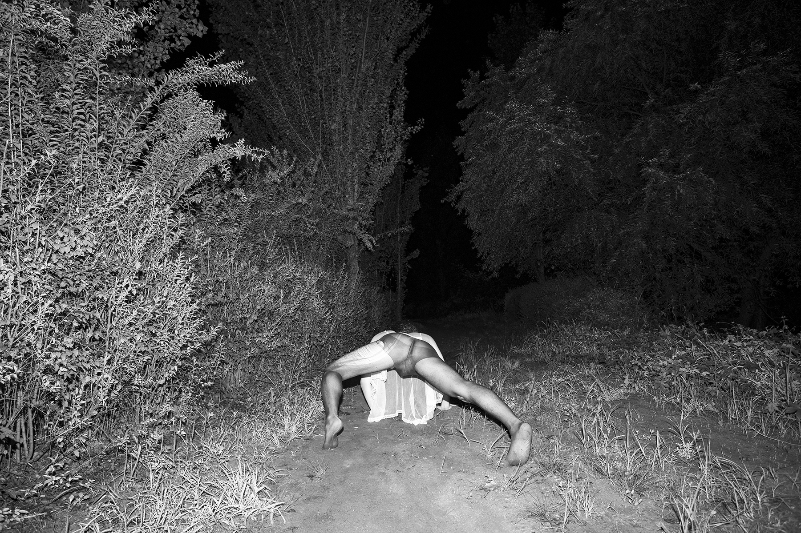 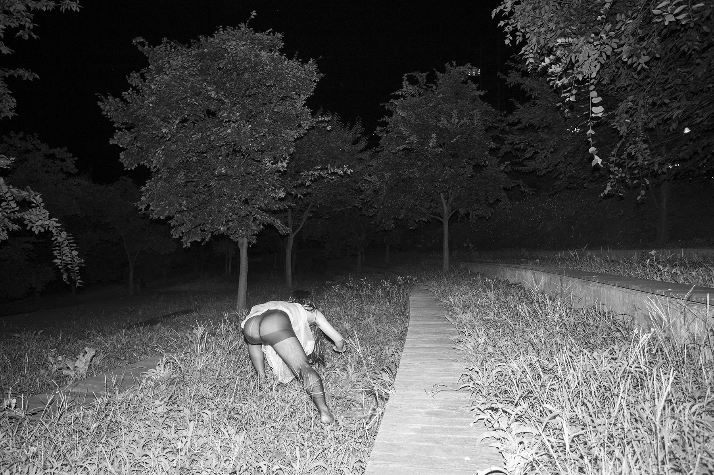 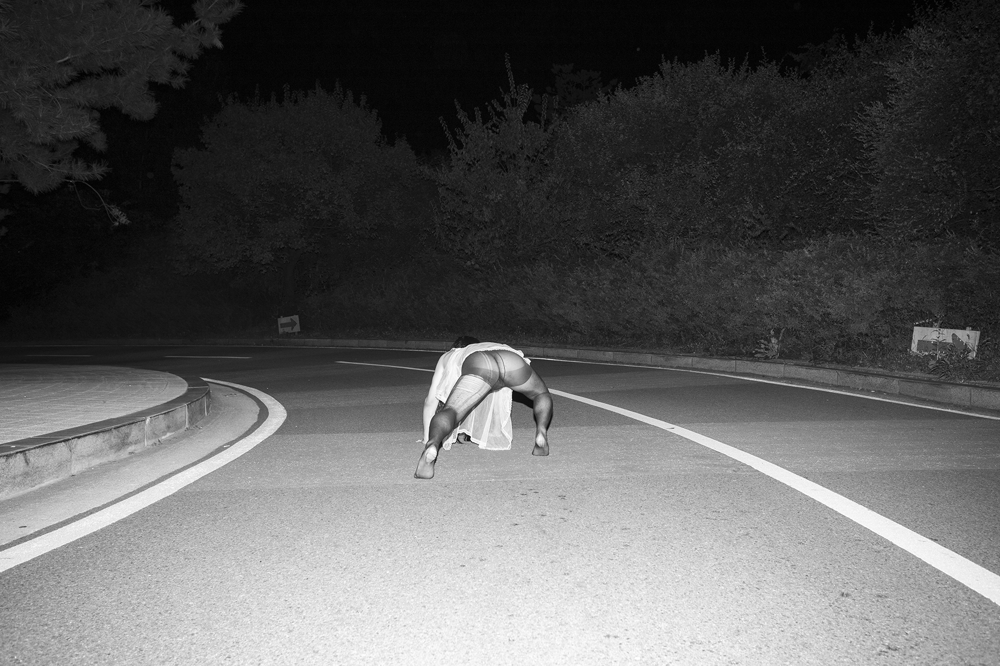 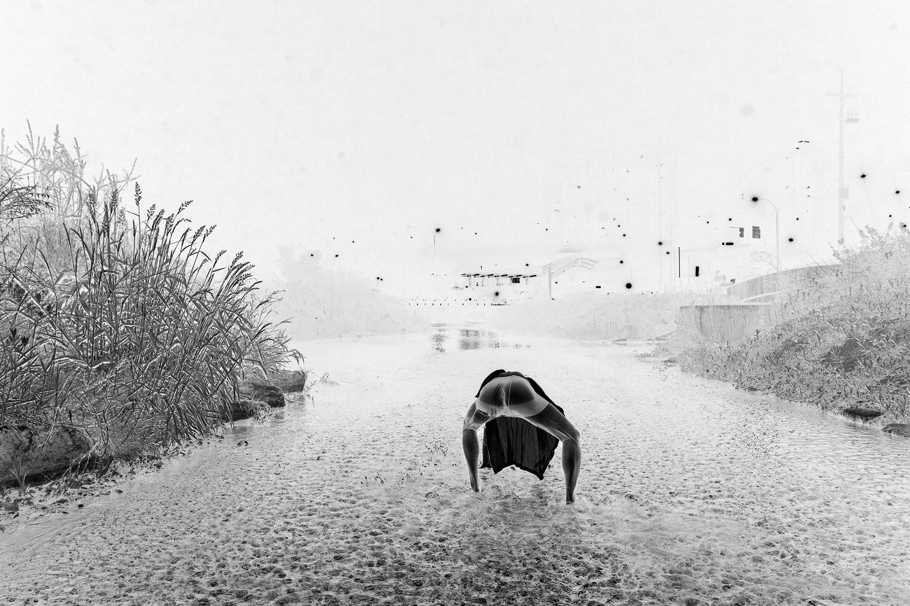
 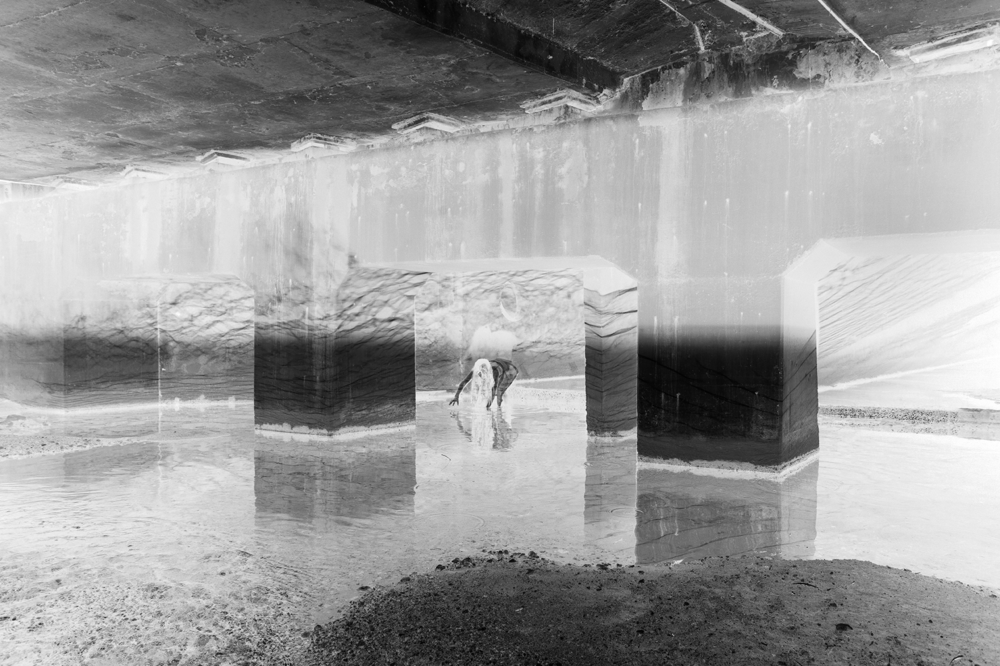
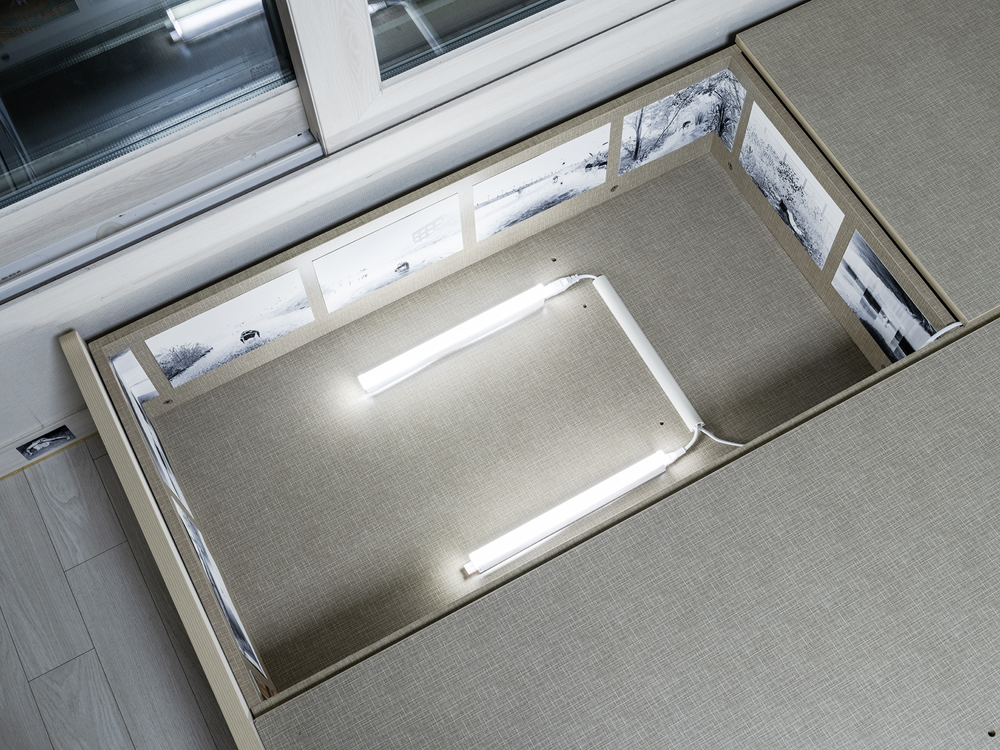
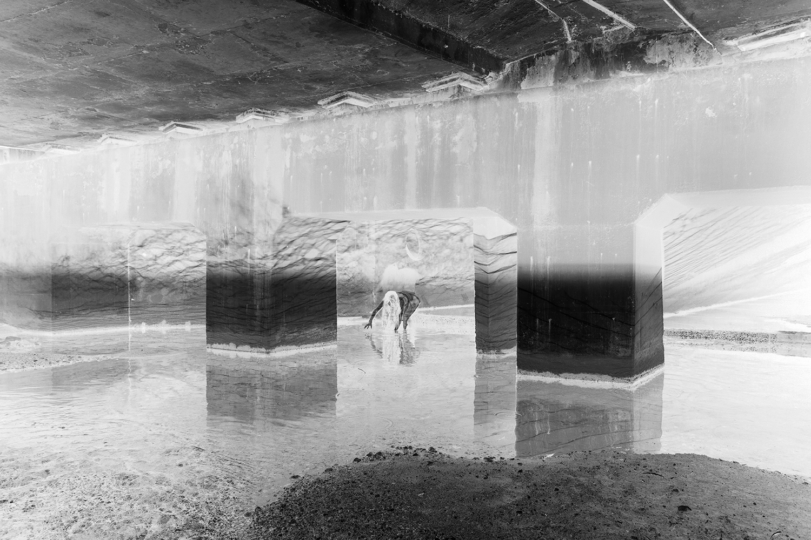
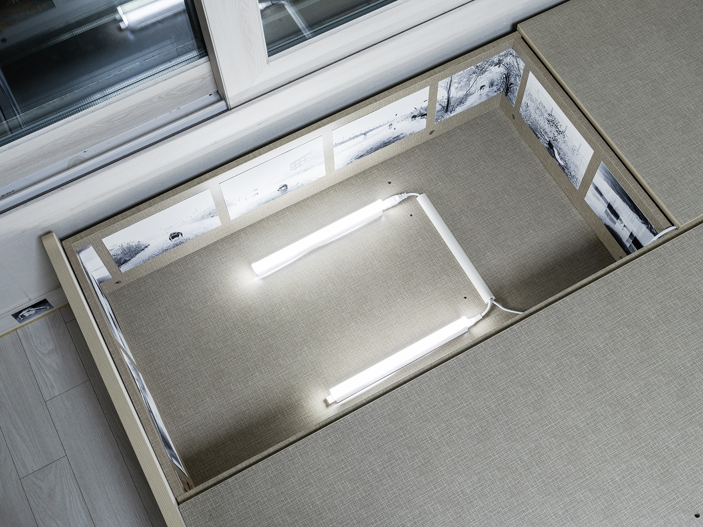
안초롱: 그래서 재훈 씨가 사진가로 불리기를 원하지 않을 수도 있겠다는 생각도 들었어요. 오히려 미술가에 가깝지 않을까? 수염같이 다른 재료로도 자기의 이미지를 만들기도 하고, 셀프 포트레이트는 사실 모든 미술가가 한 번씩 해보는 주제이기도 하잖아요. 그래서 ‘이 작가는 사진 매체를 향한 관심이 그렇게 많아 보이지 않는구나’라는 생각도 했어요.
재훈: 말씀해 주신 이유처럼, 저는 예전에 사진을 잘 찍을 필요가 없다고 생각하기도 했어요.
안초롱: 그렇죠.
재훈: 근데 <오래된 방은 궁전>이나 <무제>, <대기 시간> 같은 작품은 - 프레임 안의 긴장을 충실히 다루는 방식이 사진가의 접근이라고 했을 때 - 사진가의 작품이기도 하다고 생각해요. 그 프레임으로 봐도 상관없다고 여기고요.
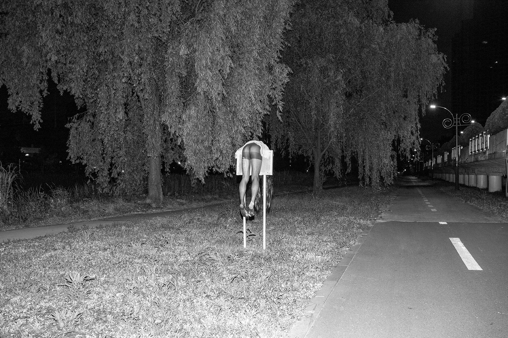
그래서 종합해 말해보면, 섞여 있어요. 둘 다 쓰는 것 같아요.
안초롱: 그럼 사진을 또 잘 찍고 싶기도 하신가 봐요.
재훈: 그런 마음이 있죠. 소실점 같은 거 좋아하고요. (웃음)
침대에 있던 <끝없이 걷는 날>은 보면서 어떠셨어요?
안초롱: 저에게는 이 T5 조명이 감상하는 데 방해가 됐어요. 너무 무대처럼 보여서 부자연스럽게 느껴졌고요. 사진 이미지는 바닥 몰딩에 있던 <끝없이 걷는 날>의 연장선에 있다고 보았는데 크롭을 하지 않아 풍경의 비율이 높더라고요. 그래서 다른 방식으로 두 번 말하는 느낌이 들기도 했어요. 이 작품도 재훈 씨 성격상 바닥 몰딩에 돌린 것처럼 반복하는 패턴이 있었는데, 제가 그 의도를 찾지는 못했어요.
재훈: 음… 제 의도보다는, 몸 부위만 크롭된 <끝없이 걷는 날>과 풍경을 보여주는 <끝없이 걷는 날>을 볼 때 어떻게 다르게 느껴지는지가 궁금했어요.
안초롱: 아무래도 야외라는 점이 더 강하게 느껴지죠. ‘이 사람이 이런 광활한 야외에서 혼자 뭐 하고 있나?’하는 느낌이 더 강하긴 해요. 다른 분들은 뭐라고 했나요?
재훈: ‘모델하우스 축소판 같다’ 그리고 ‘사진이 좀 더 잘 보였으면 좋겠다’. 이 정도? 방 안의 방처럼 느끼게 했다는 점은 성공한 것 같은데 ‘더 내실 있게 만들 수는 없었을까’하는 고민이 들긴 해요. 아무래도 더 만들어봐야 알겠죠.
안초롱: 또 궁금했던 점. 이 사진들은 전체 볼륨이 어느 정도예요? 그중에서 몇 컷 정도가 셀렉된 거죠? 예를 들어 100컷 찍었는데 그중에 한 30컷 됐다. 이런 식으로.
재훈: 전시에 내놓은 사진처럼 쓸 수 있는 게 반의반 정도는 더 있을 거예요.
안초롱: 신중하게 고르시는구나? 기록으로써 갖는 의미가 중요한 사진이고, 잘 찍지 않아도 괜찮다면 더 셀렉해도 되는 거 아니에요?
재훈: 크롭해서 바닥 몰딩에 붙인 사진들은 정말 그랬죠. 근데 아무래도 잘 찍은 걸 보여줘야 보러온 사람 입장에서도 즐거우니까요.
안초롱: 그렇긴 하죠. (웃음) 그리고 이건 《모텔전》 리뷰를 보고 생각한 건데요. 허호 작가가 재훈 씨의 사진을 보며 ‘야노(야외 노출)’이라는 장르를 언급하셨잖아요. 전시에서 보이는 사진과 시각적으로 유사한, 야노 사진들은 온라인 공간 중에서도 음지에만 떠도는 이미지들인데, 재훈 씨의 작업이 그 이미지를 전시장이라는 공간으로 불러와 물질로 남기는 일이기도 하잖아요. 이런 관점으로 보는 것도 재밌었어요. 어떻게 보면 야노 사진은 온라인에서 해시태그로만 꿰어져 있고 물질로 남길 일은 없는 이미지니까요.
그리고 야노나 CD(크로스 드레스)라는 장르 자체가 이성애자 남자들이 많이 하는 페티시 아닌가요? 여장이란 행위 자체로 성적 쾌감을 느끼는 사람들에는 이성애자가 많다고 해요. 왜냐하면 결국 여장은 남성만 할 수 있는 거니까. 여자가 남장하는 드랙킹Drag King이랑 완전히 다른 개념인 거죠. 그래서 저는 이 작가는 실제로 그런 취미를 갖고 있을 거로 생각했어요. 그리고, 있으면 뭐 어때요?
재훈: 그쵸. 있다는 걸 인정하고 알아보기 시작해야 한다고는 느껴요. 제 작업 행위와 결과물이 기존에 존재하는 어떤 사태와 유사하다면, 그에 관한 문화는 제가 맞닥뜨리고 넘어야 할 큰 허들이겠죠.
안초롱: 재훈 씨 작업에서는 상징성이 두드러지는 요소잖아요. 자기가 다루는 재료와 연관된 문화이니 ‘이런 게 있구나’하고 알아보는 것도 좋을 거예요.
아. 그리고 여장을 하는데, 그 변신의 대상인 여자를 10대나 20대 언저리의 젊은 소녀로 지정했다는 생각도 들었어요. 가발을 쓰고 힘이 없는 채로 걸려 있는 이 여자가 30대는 아니잖아요. 어린 여자죠. 특히나 <오래된 방은 궁전>에서는 완전히 소녀처럼 연기하신 것 같던데요? 수줍은 모드랄까? (웃음) 어떻게 보면 “안 돼 안 돼 안 돼”라고 말하는 수동적인 여성의 이미지에 가깝죠. 앞서 말한 강간 판타지랑도 이어질 수 있겠고요.
재훈: 사진 속 인물들이 10대, 20대 여자라고 인지하셨을 때 어떠셨어요? ‘그냥 그렇구나’라고 받아들이셨나요?
안초롱: 그냥 궁금했죠. 어린 여성이 힘이 없잖아요. 그러다 보니 M 성향을 보이는 10대 20대 여자에 대한 판타지도 많이 그려지고요. 그런 걸 보여주고 싶었나?
어쨌든 이미지로서 그려지는 여자는 젊은 여자가 절대다수잖아요. 나이 든 여자는 이미지로서의 가치가 없고요. <수염 드로잉>의 외딴 여자도 가슴이 되게 크고 그래서, 에스트로겐이 빵빵하게 나오는 여성의 이미지를 상상하면서 작업하신 것으로 보였어요.
재훈: 저는 제 작품들을 보면서 ‘이 정도면 여자 아니냐?’는 생각도 하지만, 스스로가 남자라는 사실을 기억하는 일이 중요해요. 이 점이 (아까 말씀하신) 어설픈 화장이나 게으른 제모의 배경 같고요.
그랬을 때 이 작업 행위의 목표는 ‘진짜 여자 되기’보다 그냥 여자 되기라는 ‘행위’를 하기에 가깝거든요. 이게 저와 ‘여자’라는 외부 사이의 경계를 앞뒤로 흔드는 행동이기도 한데요. 대화 시작하기 전에 초롱 씨가 ‘저는 당사자가 아니면 말을 아끼는 편’이라고 했잖아요. 그 말에 비춰봤을 때 제 작업 행위는 당사자가 아닌데도 마구마구 말하는 일에 가깝다고 느껴지거든요. ‘당사자성’이라는 단어 자체가 a와 b 사이의 벽을 굉장히 의식하게 하는 효과를 일으키기도 해서, 이 경계에 관해서는 어떻게 생각하시는지 궁금했어요.
안초롱: 이중적인 마음이긴 한데요. 저는 이상하게 진실을 막 따지게 돼요. 내가 진실하지 못한 사람이라 그런지. (웃음) 그래서 아까 직접적으로 물어봤잖아요, 평소에 여장하고 야외 노출을 직접 하시는지. 제 상상으로는, 그런 취미를 오랫동안 트위터에 올리다가 ‘이거 한번 전시해 볼까?’ 하는 식으로 만들어진 전시인가 싶었거든요. 근데 아니라고 하셨죠.
그렇다면 재훈 씨는 야외라는 무대에서 누군가가 되기를 연기하신 건데, 그 행위의 의미는 뭘까? 왜 나는 이 ‘여자-되기’를 하고 싶은 걸까? 왜 <대기 시간>에 보이는 모습이 나 같다고 느껴질까? 그런 생각을 계속하다 보면 답이 나오지 않을까요?
재훈: 엄청 단순한 이유인데요. 제가 실제로 위치한 그룹들의 구성원이 거의 다 여자인데, 그와 동시에 포르노를 보는 유년기의 습관이 계속돼서에요. 한쪽에는 (페미니즘 리부트 이후로 대중화된 모델인) 남성과 대등한 주체로서의 여성이 있고, 다른 한쪽에는 숨 쉬듯 성폭력 당하는 사물로서의 여성이 있는 거죠. 두 환경 사이에서 페미니즘과 퀴어에 관해 공부하는 저는 어느 쪽에도 온전히 속하지 못하는 거예요. 그 둘 중 누구에게도 온전히 동화될 수 없고요. 그런 이질감과 소외감이 작업의 출발점이에요.
안초롱: 오히려 저는 그게 더 재미있는 것 같은데요? 주변에 있는 여자들에게 공감하고 싶은데 잘 안되고, 그 이질감으로부터 시작했다고 하니 그럴 수 있을 것 같다는 생각이 들어요. 그러니까 여장도 그딴 식으로 하는구나… (웃음) 동기가 그렇다면 여장을 완벽하게 할 필요 없잖아요. 대충 머리 기르고 치마 입으면 여자니까.
재훈: 맞아요. 근데 관객이 작업만을 보면서는 ‘이 작가가 원래 야외 노출을 일상적으로 하는데 그걸 전시의 문법으로 풀어낸 거구나’라고 이해한다는 점이 저한테는 유의미한 감상이었어요.
그리고 어제 리뷰에서 강간 판타지를 인정하고 생각을 해봤는데, 이 작업이 상상적인 트랜지션이라고 했을 때 패티시나 판타지도 작업 과정을 통해서 발견되는 것 같더라고요.
안초롱: 맞아요. 근데 너무 어려워. 나는 섹슈얼리티가 진짜 세상에서 제일 어려운 것 같아, 그렇지 않아요? 저 이제 나이도 거의 마흔인데 아직도 잘 모르겠어. 나도 내가 뭘 좋아하는지. 아마 영원히 찾다가 죽지 않을까 싶어요. 더구나 한국은 굉장히 보수적이고 남성성이나 여성성 모두 굉장히 억압된 사회잖아요. 사회적 규범 자체가 그러니까 더 더 못 찾다가 죽는 거고, 그리고 찾는 일 자체를 두고 ‘어떻게 그럴 수 있냐’하는 손가락질을 받기도 하니까요.
재훈: 주어진 범위 바깥을 탐구하는 일이 권장되는 사회가 아니긴 하죠. 어떤 담론이 촉발되면 그 안에서 주되지 않은 입장에 관해서는 발화되지 않고요. 수치심, 죄책감, 질투 같은 감정을 느끼기에 더없이 좋은 땅 위에 서 있다고 느껴요. 많은 사람들이.
안초롱: 저 오늘 준비한 건 다 물어봤어요. 오늘 리뷰 어땠나요?
재훈: 성실히 준비해 주셔서 감사합니다.
안초롱: 노력했어요. 잘, 그리고 자세히 보려고.
재훈: 어제 했던 리뷰에서는 참여자들 개개인의 백그라운드가 도드라졌다면, 이번 리뷰는 초롱 씨가 냉장고도 열어보고 책장도 뒤져본 덕분에 현장감 넘실했네요. 재밌었습니다.
안초롱: 내가 좀 잘 봐요. 전시 많이 봐서. (웃음)
안초롱
안초롱은 일상과 가장 밀접한 매체라는 전제 아래 사진만이 가진 예술적 형식을 탐구한다. 특정 피사체를 우선 선정하여 사진을 촬영하는 작업 과정 보다는 우연적인 만남과 직관적인 접근 방식을 지향한다. 촬영 이후 사진들을 ‘다시 보기’ 하여 그들을 다종다양한 인쇄 매체로 구현하는 데 집중한다.
최근 개인전 《Flesh》 (2025, 프라이머리프랙티스, 서울)을 개최하였으며, 《Fem》 (2022, d/p, 서울), 《Natural Gene》 (2020, 취미가, 서울)과 함께 동명의 사진집을 발간하였다. 2016년부터 2021년까지 사진 협업체 <압축과팽창(CO/EX)>으로 활동한 바 있다.
www.whatsrong.com
- 안초롱 개인전 《Fem》 연계 사진집: 『Fem』, YPC PRESS, 2022.
- 인터뷰: 사진을 둘러싼 수많은 이야기들, 비애티튜드 매거진, 2024.
- 표민홍 개인전에 관한 안초롱 사진집: 『Chorong An: On exhibition』, 피블 피블 에디션스, 2021.
*본 리뷰에 사용된 전시 사진은 (‘사진: 안초롱’이 표기된 것을 예외로) 박도현이 촬영했습니다.
박도현
박도현은 홍익대학교에서 시각 디자인을 전공한 사진 기술자다. 렌즈 기반의 ‘좋은 이미지’ 제작을 지향한다.
출판사이자 콜렉티브인 Tank Press를 공동 운영한다.
@dhyvnpark